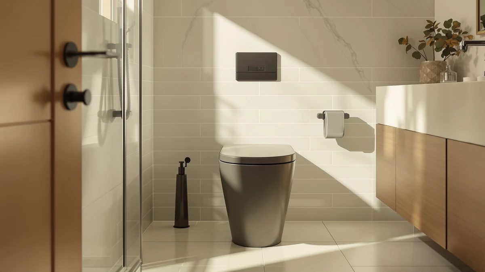

Best Smart One Piece Toilets of 2026: Bidet, Heated Seat & Auto-Flush
Prices and picks verified as of August 2026. Independent, reader-supported reviews.


Quick Answer
For most bathrooms, the EPLO U8MAX (listed as "Smart Toilet Bidet with") is the best smart one piece toilet you can buy right now: it is one of only two picks on this list with a published 1000-gram MaP flush score, and it adds an adjustable moving air dryer and a Foam Shield splash barrier on top of the bidet wash. If $1,499.96 is more than you want to spend, the Loupusuo pick below covers most of the same daily-use bidet features for a quarter of the price.
Our pick: EPLO Smart Toilet Bidet with — $1,499.96 Check Price on Amazon
Bottom line: our top pick is the EPLO Smart Toilet Bidet with Auto Open Close at $1. The best budget option is the Moen ET900 2-Series Tankless Bidet One Piece Elongated Bidet at $1.
Things to Know Before You Buy
- MaP flush score matters more than "powerful flush" claims: only two models on this list, the EPLO U8MAX and the Casta Diva CD-K030, publish a 1000-gram MaP score, an industry test for how much solid waste a toilet clears in one flush. If a smart one piece toilet does not list a number, treat "powerful flush" as marketing copy.
- Bidet triggers come in two styles: pressure-sensor seats like the Casta Diva turn on automatically once someone over roughly 29 pounds sits down, while remote or button-controlled seats on the Moen and Vipbear picks need a manual press. Neither wins across the board, sensor seats save a step but can miss lighter users.
- Not every "smart" one piece toilet is electric: the AONSOK Model A on this list is a manual-flush, non-electric shell of the same one-piece body used across AONSOK's five electric configurations, a low-cost way to try the shape before upgrading.
- Dual flush needs a wider drain path: the Vipbear pick's 4.8-liter full flush and 3.5-liter half flush both rely on the same trapway, so confirm your existing rough-in before assuming a smart toilet swap is a drop-in job.
- An accessible outlet is not optional: every electric model here, including the Glendan pick, needs a grounded outlet within reach of the base, and most also require the toilet to be floor-mounted rather than wall-hung.
Finding the best smart one piece toilets for your bathroom means weighing flush power against how much bidet technology, heated seating and hands-free automation you want to pay for. We compared eight one-piece smart toilets ranging from a $99.00 manual-flush entry model to a $1,499.96 flagship with a published 1000-gram MaP flush score, and sorted them by what each one delivers rather than the feature list on the box. Prices below reflect Amazon listings at the time of writing and can shift, so check the current price before you order.
Smart one-piece toilets fall into a few real categories once you look past the marketing. Sensor-triggered bidet seats, like the ones on the Casta Diva CD-K030 and the EPLO U8MAX, open and wash automatically once you sit down, while dual-flush models such as the Vipbear pick let you send a full 4.8-liter flush at solid waste and hold back to 3.5 liters on lighter trips. A couple of picks, including the AONSOK Model A, strip out the electronics entirely and keep only the one-piece shape and comfort height, a useful way to test the layout before committing to an electric unit.
Price on this list runs from $99.00 up to $1,499.96, and the jump mostly buys you flush verification, heated-seat zones and dryer settings rather than a completely different toilet. The EPLO U8MAX earns our top spot because it is one of only two models here with a published MaP flush score alongside its bidet and dryer features, but the Loupusuo and Vipbear picks below cover most of the same daily-use features for a fraction of the price.
Why You Should Trust Us
This guide is written and maintained by Ilane Tall, who runs a network of bathroom-focused review sites and spends more hours than is reasonable comparing bidet toilets on the specs that predict day-to-day comfort rather than marketing copy. We do not run a fake testing lab and we did not install eight smart one piece toilets in a warehouse. We read every spec sheet, cross-check MaP flush scores, wattage, wash-mode counts and installation requirements against manufacturer documentation and verified owner reviews, and skip any listing that hides basic details like rough-in size. Our Amazon commissions never change a ranking.
How We Picked
We started with one-piece smart toilets in stock and shipping in the US, then filtered on what separates a good bidet toilet from a marketing page: a documented flush score where the manufacturer publishes one, a bidet system with adjustable temperature and pressure rather than a single fixed setting, and a heated seat or dryer where the listing spells out the settings instead of claiming luxury comfort without specifics. We also made sure the final eight span a real price range, from $99.00 to $1,499.96, so there is a sensible smart one piece toilet whether you are testing the format for the first time or replacing a full washlet system.
How We Compared
Since we do not install eight toilets in a working bathroom, our evaluation is a documentation and owner-experience review rather than a hands-on lab test, and we would rather say that plainly than fake a testing rig. For each model we compared the published flush type and MaP score where available, mapped the bidet controls, sensor-triggered, remote or button, against what owners report in reviews, and weighed heated-seat levels, dryer settings and extras like night lights or child mode against the price. The result is a shortlist of smart one piece toilets built on the specs that predict daily comfort, not the longest feature list.
Our Picks

EPLO Smart Toilet Bidet with
What we like
- Published 1000-gram MaP flush score, one of only two models on this list with a documented number instead of a marketing claim
- Foam Shield coats the bowl before use, cutting splashback and keeping waste from sticking
- Moving air dryer adjusts temperature, wind speed and position instead of a single fixed setting
Flaws but not dealbreakers
- Most expensive smart one piece toilet on this list at $1,499.96
- The listing name, "Smart Toilet Bidet with," is truncated, so confirm you are ordering the U8MAX configuration before checkout
| Material | — |
| Size | — |
EPLO's U8MAX is the smart one piece toilet we point buyers to first when flush power matters as much as bidet features. Its 1000-gram MaP score is a real plumbing-industry test for how much solid waste a toilet clears in a single flush, and EPLO is one of only two brands on this list, alongside Casta Diva, that publishes the number instead of claiming a strong flush without evidence.
The Foam Shield feature lays a thin foam layer across the bowl before each use, which cuts down on splashback and keeps waste from sticking to porcelain between cleanings, a detail that matters more day to day than most spec sheets let on. The moving air dryer adds adjustable temperature, wind speed and position, closer to a washlet than the single-setting dryers on cheaper picks. At $1,499.96 it costs roughly triple the Loupusuo pick below, and that premium buys documentation and dryer control more than it buys a fundamentally different toilet.

Smart Toilet with Warm Water
What we like
- 1.26 gallons per flush keeps water use low on a standard 12-inch rough-in
- Automatic lid and sensor-controlled flush cut down on physical contact with the toilet
- Five adjustable nozzle positions and pressure levels across posterior, feminine and massage cleaning modes
- Emergency flush function still works during a power outage, a detail most budget smart toilets skip
Flaws but not dealbreakers
- At $379.99 it costs roughly four times the AONSOK manual-flush pick, though it adds a full bidet system
- No published MaP flush score, so flush strength is not independently documented the way the EPLO and Casta Diva picks are
| Material | — |
| Size | WHITE L01 PRO MAX |
Loupusuo's Smart Toilet with Warm Water Sprayer and Dryer, sold under the WHITE L01 PRO MAX listing, covers the core features most buyers want from a smart one piece toilet without pushing into four-figure territory. The lid opens and closes automatically, flushing is sensor-controlled, and the bowl gets a pre-use rinse before you sit down, all aimed at cutting down on the surfaces you touch.
The bidet system is where it earns its price: five adjustable nozzle positions and pressure levels split across posterior, feminine and massage cleaning modes, controlled by a remote rather than a wall panel. It also keeps an emergency flush function for power outages, something several pricier picks on this list do not mention. At 1.26 gallons per flush it stays efficient on a standard 12-inch rough-in, though Loupusuo does not publish a MaP score, so you are trusting the spec sheet on flush strength rather than an independent number.

AONSOK Smart Toilet One Piece
What we like
- Lowest price on this list at $99.00, with a siphon jet flush and fully-glazed trapway shared across all six AONSOK models
- 17-inch comfort height and soft-closing seat match the pricier electric configurations in this lineup
- Standard 12-inch rough-in and complete DIY hardware included, so installation does not require a plumber
- Seamless skirted one-piece body with no hidden crevices to clean around
Flaws but not dealbreakers
- Model A is manual flush and non-electric, so it skips the bidet, heated seat and foot sensor that AONSOK reserves for Models B through F
- If you want any smart features at all, you will need to pay more for a different letter in the same lineup
| Material | — |
| Size | Model A – Manual Flush, Non-Electric |
AONSOK sells this one-piece shell in six configurations, lettered A through F, and Model A is the manual-flush, non-electric version, the only one on this list that is not a smart toilet in the way the rest of this guide is. We include it because at $99.00 it is the cheapest way to get the same 17-inch comfort height, siphon jet flush and seamless skirted body that the pricier AONSOK models share, before you commit to paying for electronics.
If you decide later that you want the bidet, heated seat, foot sensor, remote or night light AONSOK offers on its higher letters, the swap means buying a different model rather than upgrading this one, since those features are built into the toilet rather than added on. For now, Model A gets you a comfort-height, fully-glazed one-piece toilet with a standard 12-inch rough-in and included hardware, without spending anything on features you might not end up using.

Casta Diva Smart Toilet with
What we like
- 1000-gram MaP flush score matches the EPLO U8MAX, the only other model here with a published number
- Bidet seat triggers automatically once someone over about 29 pounds sits down, no button or sensor spot to aim for
- Foam Shield creates a splash barrier and can be topped up with a simple dish-soap solution
- Auto open/close lid and heated comfort seat round out the hands-free features
Flaws but not dealbreakers
- At $999.99 it costs $500 less than the EPLO U8MAX but still sits well above the mid-range picks on this list
- The pressure-trigger bidet will not activate for users under roughly 29 pounds, since that is the weight it needs to sense a seated person
| Material | — |
| Size | — |
Casta Diva's CD-K030 is the second model on this list, alongside the EPLO U8MAX, to publish a 1000-gram MaP flush score rather than claiming a powerful flush, and it pairs that with a bidet seat that activates automatically once you sit down. There is no sensor spot to find and no button to press first, the weight of a seated adult triggers the wash cycle on its own.
The Foam Shield layer works the same way as the EPLO pick's, coating the bowl to block splashes and keep waste from sticking, and Casta Diva notes you can mix a simple dish-soap solution if the built-in dispenser runs low. At $999.99 it undercuts the EPLO by $500 while matching its flush score, though you give up the U8MAX's adjustable moving-position air dryer. For most bathrooms, the trade is worth it if hands-free bidet activation matters more to you than dryer customization.

Moen ET900 2-Series Tankless Bidet
What we like
- Comes from Moen, a plumbing brand with a longer US track record than most other manufacturers on this list
- Remote controls front wash, rear wash, dryer, flush and the lid, all from one handset
- Adjustable temperature and pressure on both front and rear wash settings
- Tankless design skips the bulky reservoir some competitors still use
Flaws but not dealbreakers
- At $1,482.70 it costs nearly as much as the EPLO U8MAX without publishing a MaP flush score of its own
- Moen's listing does not spell out foam-shield or splash-control features the EPLO and Casta Diva picks include
| Material | — |
| Size | — |
Moen's ET900 2-Series is the name buyers already trust showing up on a smart one piece toilet, and that brand recognition is a real part of the pitch at $1,482.70. Several picks on this list come from manufacturers that only make bathroom electronics, but Moen has decades in US plumbing fixtures behind it, which matters if you would rather not gamble on an unfamiliar name for a toilet that plugs into the wall.
The remote covers front wash, rear wash, dryer, flush and lid control from a single handset, with adjustable temperature and pressure on both wash settings, and the tankless design keeps the profile slimmer than tank-style competitors. It does not offer a published flush score, so you are weighing brand trust against the documented 1000-gram MaP numbers on the EPLO and Casta Diva picks above. For buyers who prioritize a familiar name over an independent flush test, it is a reasonable trade at a similar price point.

Smart Toilet with Bidet Built
What we like
- Dual flush splits into a 4.8-liter full flush for solids and a 3.5-liter half flush for liquids
- Foam Shield creates an airtight splash barrier and includes an auto deodorizer
- Dual-nozzle bidet system adjusts position, pressure and temperature separately for posterior and feminine wash
- Self-cleaning nozzles run a UV-C cycle before and after each use
Flaws but not dealbreakers
- Lid is manual rather than the auto open/close feature on the EPLO, Casta Diva and Glendan picks
- No published MaP flush score to independently verify flush strength
| Material | — |
| Size | — |
Vipbear's Smart Toilet with Bidet Built in earns its spot on this list by covering the two features that matter most for daily use, water-saving flush control and an adjustable bidet system, at $269.97, under a third of the EPLO U8MAX's price. The dual flush sends a full 4.8-liter flush at solid waste and drops to 3.5 liters for a lighter trip, and the Foam Shield barrier plus auto deodorizer help keep the bowl from smelling or staining between cleanings.
The dual-nozzle bidet system lets you set position, pressure and temperature separately for posterior and feminine wash, and the nozzles run a UV-C self-clean cycle before and after use rather than relying on a manual rinse. The lid itself is manual, so you will not get the auto open/close motion the pricier EPLO, Casta Diva and Glendan picks include, and Vipbear does not publish a MaP flush score. For a smart one piece toilet built around water savings and bidet hygiene rather than full automation, it is one of the better values here.

EPLO Smart Toilet One Piece
What we like
- Heated seat, nightlight, auto deodorization and instant warm water in one tankless unit
- Four ways to flush: off-seat auto, button, foot sensor or remote
- Self-cleaning arc wand adjusts spray shape, position, pressure and temperature, with pulsate and oscillate modes
- At $599.96 it costs less than half the EPLO U8MAX while sharing the same brand's build
Flaws but not dealbreakers
- No published MaP flush score, unlike the brand's own U8MAX
- LED display and remote add more to learn than the simpler button-only picks on this list
| Material | — |
| Size | — |
The EPLO E16 sits in the middle of this list on price and roughly in the middle on features too, a tankless smart one piece toilet with the heated seat, warm-water wash and LED display that the pricier U8MAX offers, minus the published flush score and moving air dryer. At $599.96 it costs less than half the U8MAX while coming from the same manufacturer, which matters if you have already decided you trust EPLO's build quality.
Flush options are unusually flexible here: off-seat auto flush, a physical button, a foot sensor or the included remote, so you can pick whichever method fits your household. The self-cleaning arc wand adjusts spray shape, position, water pressure and temperature, with pulsate and oscillate modes on top of standard front and rear wash. The trade-off for the lower price is that EPLO does not publish a MaP score for the E16 the way it does for the U8MAX, so flush strength here is a manufacturer claim rather than a documented number.

Smart Toilet with Bidet Built-in:
What we like
- Noble Black finish stands out from the all-white lineup everywhere else on this list
- Child Mode adjusts the bidet wash specifically for smaller users
- Four-level seat heating and a four-temperature air dryer cover a wider comfort range than single-setting competitors
- Auto-opening lid plus a foot sensor back it up if the sensor does not trigger
Flaws but not dealbreakers
- Requires a floor-mounted installation and an accessible electrical outlet nearby, which Glendan flags directly rather than burying in fine print
- No published MaP flush score to compare flush strength against the EPLO and Casta Diva picks
| Material | — |
| Size | — |
Glendan's Smart Toilet with Bidet Built-in is the only toilet on this list that is not white, its Noble Black finish is a real point of differentiation if you are tired of every bidet toilet looking identical. Past the color, it is built for families: Child Mode adjusts the wash cycle for smaller users, and the auto-opening lid plus foot-sensor backup mean fewer surfaces anyone needs to touch.
Seat heating runs four adjustable levels and the air dryer offers four temperature settings, both wider ranges than the single-setting dryers on cheaper picks, and a night light and pre-wet cycle round out the feature list. Glendan is upfront that installation needs a floor-mounted toilet with an accessible outlet nearby, worth checking before you buy rather than after delivery. At $369.99 it prices in line with the Vipbear pick, with the black finish and child mode as the deciding factors over flush documentation.
Quick Comparison
| Product | Material | Price | Rating | Best for | Get it |
|---|---|---|---|---|---|
| EPLO Smart Toilet Bidet with | — | $1,499.96 | 4 | Best overall, documented flush score | View on Amazon → |
| Smart Toilet with Warm Water | — | $379.99 | 4 | Best value smart bidet | View on Amazon → |
| AONSOK Smart Toilet One Piece | — | $99.00 | 4 | Best budget entry point (non-electric) | View on Amazon → |
| Casta Diva Smart Toilet with | — | $999.99 | 4 | Best pressure-sensor bidet | View on Amazon → |
| Moen ET900 2-Series Tankless Bidet | — | $1,482.70 | 4 | Best from an established plumbing brand | View on Amazon → |
| Smart Toilet with Bidet Built | — | $269.97 | 4 | Best dual-flush water savings | View on Amazon → |
| EPLO Smart Toilet One Piece | — | $599.96 | 4 | Best mid-range EPLO | View on Amazon → |
| Smart Toilet with Bidet Built-in: | — | $369.99 | 4 | Best for families (child mode) | View on Amazon → |
The Competition
Plenty of smart one piece toilets marketed with "powerful flush" and "luxury" claims did not make this list, usually because the listing left out the details that predict daily performance. Several ultra-cheap electric bidet toilets undercut our AONSOK budget pick on price but skip any flush documentation at all and carry a pattern of leak complaints around the base seal, and a smart toilet that leaks is no bargain no matter how many wash modes it lists.
We also passed on a handful of oversized units that need a dedicated 240-volt circuit or a support structure beyond a standard floor mount, better suited to a full bathroom renovation than a straightforward toilet swap. If your project already involves rewiring the room, that is a different guide than this one.
Finally, we set aside a few listings that reused stock photos across multiple ASINs with inconsistent specs between the title and the bullet points, a sign the listing is not reliable enough to trust with a $300-plus purchase. A manufacturer that publishes a real MaP score and a clear feature list, like EPLO and Casta Diva do here, earns that consistency as part of why they lead this list of the best smart one piece toilets.
Frequently Asked Questions
What makes a one-piece toilet "smart"?
A smart one piece toilet builds bidet washing, and usually a heated seat, dryer and automatic lid, directly into the toilet itself instead of adding a separate seat attachment. Features vary a lot between models: the AONSOK Model A on this list is the non-electric shell of a smart lineup, while the EPLO U8MAX adds a documented flush score, a moving air dryer and a foam splash shield on top of the bidet wash.
Do I need a special outlet to install a smart one piece toilet?
Yes, on every electric model. You need a grounded outlet within reach of the toilet base, and most manufacturers, including Glendan, specify that the toilet must be floor-mounted rather than wall-hung. Confirm outlet placement and mounting type before you order, since retrofitting an outlet into an existing bathroom wall is a bigger job than the toilet swap itself.
Is a published MaP flush score worth paying more for?
It is the closest thing to an independent flush test in this category. The EPLO U8MAX and Casta Diva CD-K030 both publish a 1000-gram MaP score, an industry measure of how much solid waste a toilet clears in one flush, while most of the other picks on this list only claim strong flushing without a number attached. If flush reliability matters more to you than bidet extras, those two documented models are the safer bet.